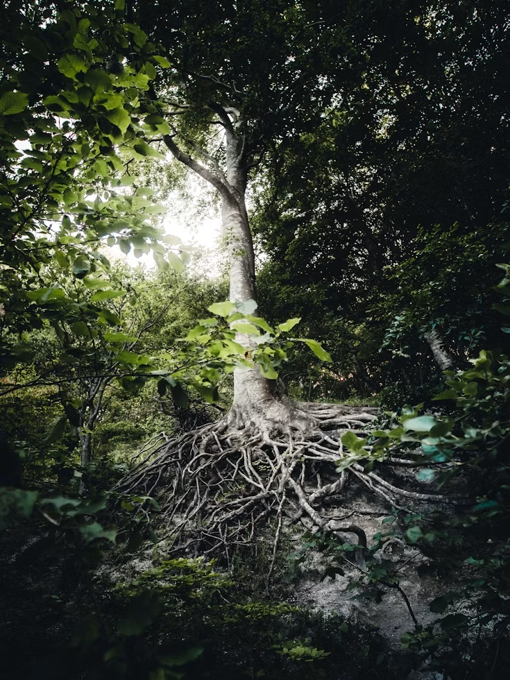
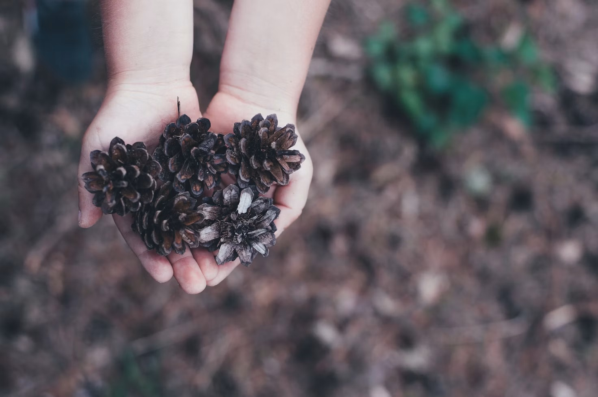
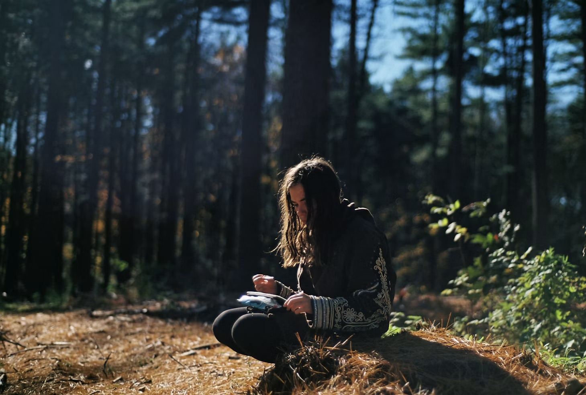
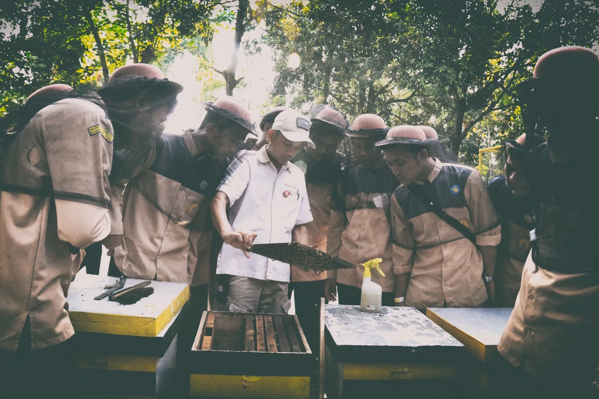
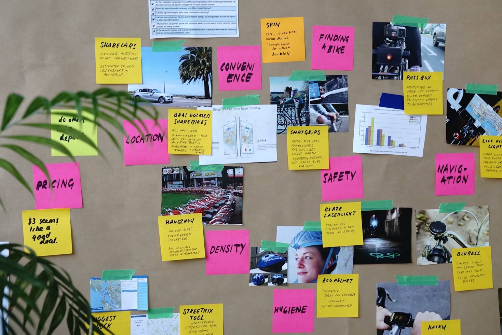
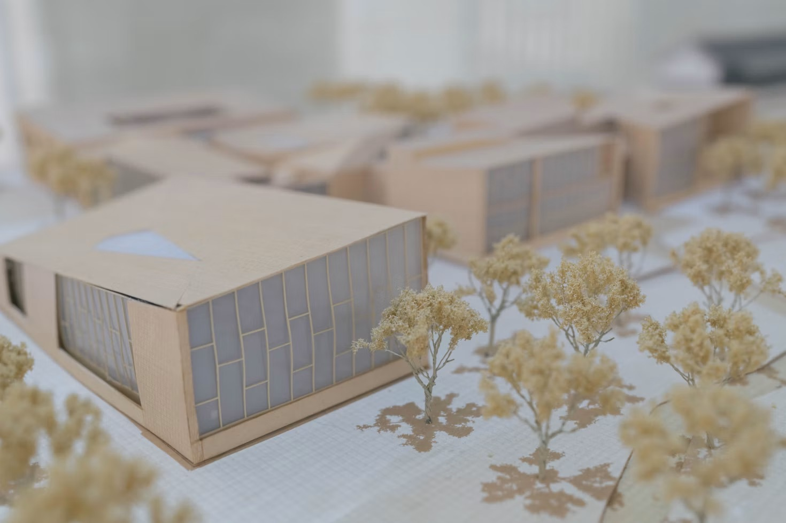

Process Journal
A journal of how their thinking grew and changed and how their questions evolved, in any format they choose: written, drawn, or voice-recorded.
A youth-led course helping STEM-curious students in Grades 6–8 think regeneratively and see the whole system.
ROOTS Quest is an 8-week project-based STEM program for students in Grades 6–8 that teaches young people to see the world differently.
Rather than beginning with solutions or answers, students first learn how to understand the systems behind the problems they care about.
Through systems thinking, regenerative design, and innovation inspired by nature, students explore how people, technology, and the environment are connected—and how thoughtful design can strengthen those relationships instead of breaking them.
Ryan Xia, founder and facilitator of ROOTS Quest, walks through what the course is and who it is for.
It empowers students ages 11-14 in grades 6-8 to understand problems and ask questions with consideration of the entire system, every angle and scale, and how it supports life on earth.

ROOTS Quest is built for curious STEM students in grades 6–8 who want to think beyond the textbook and tackle real-world problems.
ROOTS Quest is completely free — no tuition, no fees, no catch — because meaningful learning should be accessible to every student.
The course runs for 8 weeks with one live one-hour session per week, making it easy to fit into any schedule.
Every session happens live over Zoom, giving students a real-time interactive experience from wherever they are.
ROOTS Quest runs in small cohorts of 15 students, keeping every session intimate enough for real conversations and genuine peer feedback.
ROOTS Quest is based out of Calgary but designed to be fully accessible to students anywhere with an internet connection.
Most solutions only treat the surface. Students who love science are handed problems from a textbook, asked to memorize what is right, and are never shown how the pieces connect.
Students are taught to fix the symptom in front of them, not to ask why the problem exists or what it is connected to.
Science fairs and school projects hand students a problem. Curiosity fades when the question was never theirs to begin with.
STEM is taught as separate from the living world, even though nature has been solving hard problems for billions of years.
Students won’t just learn about the problems they’re interested in, they’ll learn what the system is behind the problem, the connections that relate to that problem, and designing what is their next step with this new understanding.
In the span of this 8 week course for students in grades 6-8 that teaches systems thinking, regenerative design, and nature-inspired problem solving in STEM.


Within a forest, everything is connected. The ecosystem’s health sits on a tightrope, yet nature manages to keep it balanced.
ROOTS Quest strives to build a connection between passionate young students in STEM and the natural ecosystem through regenerative and systems thinking.

A journal of how their thinking grew and changed and how their questions evolved, in any format they choose: written, drawn, or voice-recorded.
A diagram connecting and linking their problem to the larger system behind and around it, including causes, loops, and relationships.

A first version of their solution in any form: a sketch, physical model, diagram, or written proposal.

A short slideshow presenting their problem, research, and proposed solution to an audience of parents and peers.
Degenerative vs. Regenerative Thinking
Mapping Systems and Feedback Loops
Connecting Environment, Tech, and Society
Learning Design from Nature
Proposing Nature-Inspired Solutions
Finding Real Points of Change
Designing a Pitch Deck
Finding and Evaluating Sources
Building a Lo-Fi Prototype
Keeping a Weekly Journal
Giving and Receiving Feedback
A question that changes how you see everything. We start by looking at the world differently, tracing the hidden threads that connect problems you already care about.
Most solutions only treat the surface. This week students learn to see deeper, understanding why things work the way they do and what it really means to make something better.
Nature has been solving hard problems for billions of years. Students step outside, observe, and start asking what it would look like to design things the way living systems do.
Three cities. Three broken systems. Three remarkable transformations. Students dig into what actually happened and ask whether something like this could happen where they live.
From Alberta farmland to the Bow River, students discover that regenerative thinking isn't abstract. It's already happening in their own backyard, led by communities who've been doing it for generations.
Every great project starts with the right question. This week students find theirs, something they genuinely care about, rooted in what they've learned and pointed toward something real.
Ideas become tangible. Students prototype, pitch, and get honest feedback, experiencing what it actually feels like to move from thinking to making.
A live showcase with a real audience. Students present the work they've built over 8 weeks and answer for it, confidently and on their own terms.
Course starts October 18. Registration closes October 16.
Join ROOTS QuestWe invite you to join us and learn to see the world the way a forest works — connected, resilient, and alive.
You're in grades 6 to 8, ages 11 to 14, and curious about how the world actually works
You love science but feel like school only scratches the surface of what's possible
You ask why and what if
You care about people and the planet and want to do something real about it
You want to tackle a problem you actually chose, not one assigned from a textbook
You've done science fairs and school projects and you're ready for something that goes deeper
Ryan Xia
Founder and facilitator, ROOTS Quest
Ryan Xia is a student, youth creator and educator, and aspiring engineer based out of Calgary, Alberta, and the founder of ROOTS Quest. As a competitive robotics member in FIRST Tech Challenge with Cybertronic Penguinz and a youth creator and educator with experience running education programming in STEM and robotics subjects, Ryan brings a unique combination of technical curiosity and a passion for teaching everything he builds.

“ROOTS Quest didn’t stem from a classroom assignment or a school project. It came from the core philosophy that regenerative thinking is one of the most important ideas of the present and future—and that its seed should be planted in our future innovators, scientists, researchers, entrepreneurs, and engineers.”
These case studies show systems thinking, regenerative design, and nature-inspired problem solving already being applied by organizations around the world.
Ready to Grow Your ROOTS?
Spots are limited. Sign up to reserve and register your place or to ask more about the course.
Join ROOTS QuestFree webinar October 11 · Registration closes October 16 · Course starts October 18